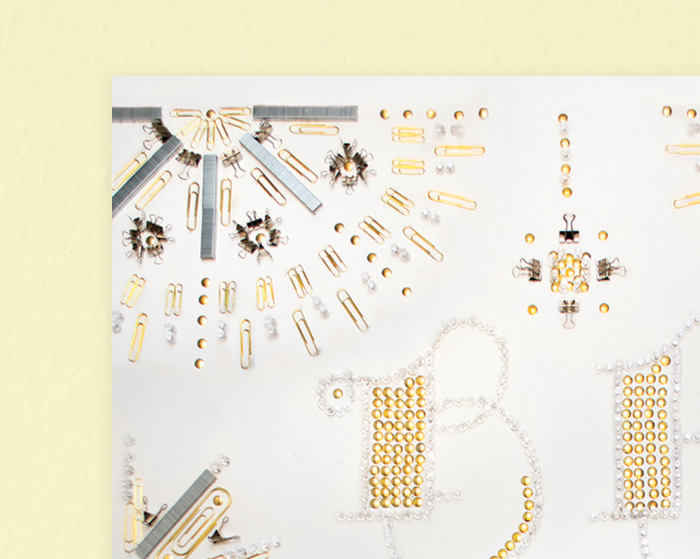
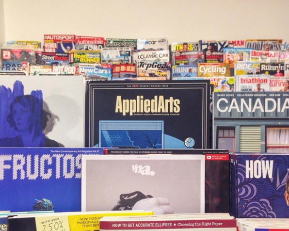
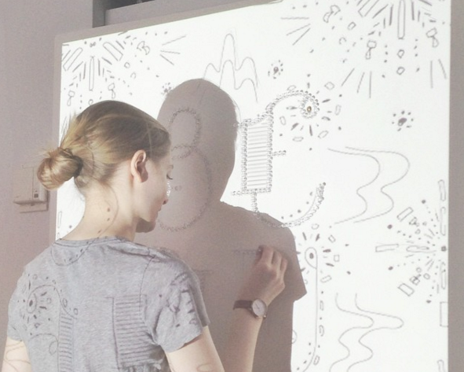
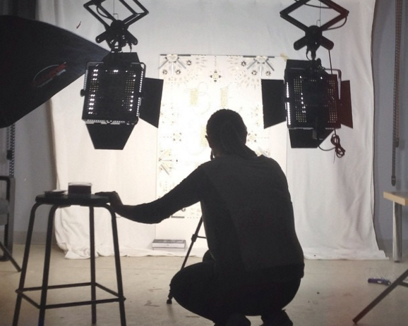

Beauty: Found Typography
Constructed from hundreds of paper clips, push pins, bull clips and staples, this 24” x 36” poster explores the potential for beauty to be found in mundane, everyday objects.
In November 2015, this piece was exhibited at Swash & Serif 2, a one-week long typography show at the Black Cat Gallery in Toronto, Ontario. "Beauty" was also selected as a winner in the 2015 Applied Arts Student Awards. The piece was published in the magazine in November 2015 and distributed globally.






Grow Up With Me
A typographic rendering of a poem called Grow Up With Me by Keaton Henson. The primitive illustration style and meandering composition in this diptych embody Henson's nostalgic wish for the wonder and simplicity of childhood.